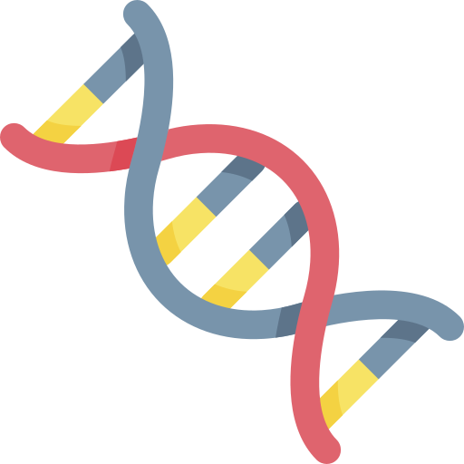
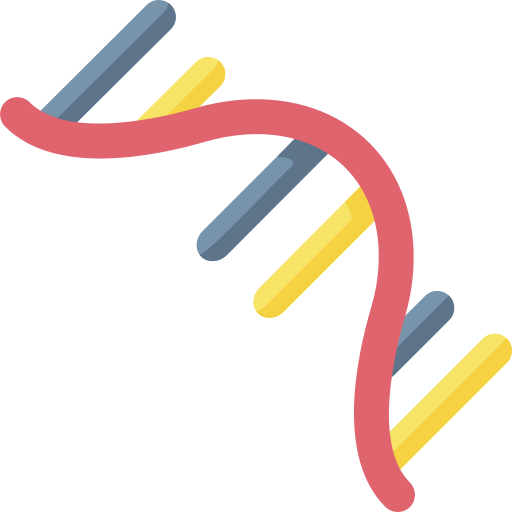

DNA
DNA는 deoxyribonucleic acid를 줄인 말로, ‘디옥시리보핵산’이라 부르기도 합니다.
DNA는 유전물질을 담고 있는 세포의 핵 속에서 발견되는 두 종류의 핵산(nucleic acid) 중 하나로서
핵산을 구성하는 기본 구조인 리보오스(ribose)의 2번 탄소에서 산소원자 하나가 제거된(deoxy-) 형태의 핵산을 의미합니다.
인산-당-염기로 구성된 중합체 두 가닥이 서로 마주보는 염기들과 상보적 결합을 이루어 이중나선구조를 가지는 특징이 있습니다.
DNA를 구성하는 염기는 총 4종류로 아데닌(A), 구아닌(G), 티민(T), 사이토신(C) 입니다.
생명체의 종류에 따라 예외가 있으나 보통 "DNA는 유전정보를 보관 및 보존"하는 데 이용합니다.
DNA는 거의 모든 생물체의 유전물질로 사용되며, 일부 바이러스는 유전물질로 RNA를 대신 사용합니다.

RNA
RNA는 Ribonucleic acid의 약자로 유전자 정보를 매개, 유전자의 발현의 조절 등에 관여합니다.
RNA는 DNA와 더불어 핵산이라고 하는데, 지방, 단백질, 탄수화물과 더불어 생명체를 이루는 주된 물질입니다.
DNA가 이중나선구조인 것에 비해, RNA는 단일가닥구조를 이루고 있습니다.
이러한 구조적 특성으로 RNA는 DNA에 비해 상당히 불안정합니다.
복제가 일어날 때 DNA는 한 쪽이 손상되어도 다른 한 쪽을 참고하여 염기쌍을 올바르게 복제 할 수 있지만,
RNA는 참고할 정보가 없기 때문에 돌연변이가 일어나기 쉽습니다.
때문에 COVID-19와 같은 RNA바이러스는 우리 몸에 침입하여 증식하는 과정에서 돌연변이가 많이 일어나고,
그 결과 새로운 바이러스가 되는 것 입니다.
RNA를 구성하는 염기는 총 4종류로 아데닌(A), 구아닌(G), 유라실(U), 사이토신(C)이고, DNA와 달리 티민 대신 유라실을 가진다는 차이가 있습니다.
RNA는 "유전자의 조절", 세포 시그널의 인식 등 다양한 생명현상에 작용할 뿐 아니라, RNA 자체가 효소로서 작용하기도 합니다.
세포 속에서 작용하는 RNA로는 mRNA, tRNA, rRNA, snRNA, non-codingRNA 등이 존재합니다.
DNA와 RNA의 특징
| DNA | RNA |
|---|
| 구조 | 이중 나선 구조 | 단일 가닥 구조 |
| 안정성 | 안정적 | 불안정 |
| 역할 | 유전 정보 저장 | 유전정보 전달,
효소 |
| 구성 염기 | 아데닌(A), 구아닌(G),
티민(T), 사이토신(C) | 아데닌(A), 구아닌(G),
유라실(U), 사이토신(C) |
Central dogma
머리카락, 피부, 근육, 혈액 속 헤모글로빈 등 우리 몸의 대부분은 단백질로 이루어져 있습니다.
그리고 이러한 단백질들은 앞서 배운 DNA에 담겨있는 유전 정보를 토대로 알맞게 만들어집니다.
그렇다면 어떻게 DNA의 유전 정보를 읽어 우리 몸에 필요한 단백질이 만들어지게 될까요?
그 답은 바로 central-dogma(중심원리)에 있습니다.
central-dogma란, 생명체의 세포에서 유전정보가 어떻게 이용이 되는지 그 흐름의 방향을 설명하는 원리입니다.
간단하게 우리가 가지고 있는 유전 정보를 토대로 단백질이 만들어지는 과정이라 이해하시면 좋을 것 같습니다.
대부분의 경우
DNA -> DNA (복제, replication)
↓
DNA -> RNA (전사,transcription)
↓
RNA -> 단백질 (번역,translation)
순서로 유전 정보의 전달이 이루어집니다.
이들중 알아두면 좋은 핵심 내용만 간략히 정리해보겠습니다.
최근 우리가 많이 들어봤던 mRNA(messenger RNA)는 전사 과정을 통해 만들어집니다.
DNA의 유전정보를 담아 단백질을 합성하는 리보솜으로 전달하는 역할을 하기 때문에 붙여진 이름입니다.
이렇게 만들어진 mRNA를 통해 유전 정보를 번역하여 단백질을 만들고, 수 분 혹은 수 시간 뒤 mRNA는 세포 내에서 분해되어 사라집니다.
Quiz
1. DNA에 대해 옳은 내용은?
2. RNA는 구조적 특성때문에 DNA에 비해 돌연변이가 일어나기 쉽다.
3. 다음 중 옳지 않은 내용은?